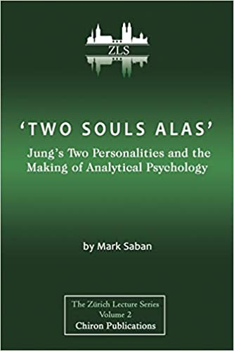

Articles ━━━━━━━━━━━━━━━━━━━━━━━━━━━━
Publications & conference talks
'Two Souls Alas': Jung's Two Personalities and the Making of Analytical Psychology
Winner of International Assocation for Jungian Studies Best Book of 2019
"In forty five years inhabiting the Jungian field, I’ve found very few books to be game changers. This is one... a masterly rejig of analytical psychology that bears the hallmarks of an original mind, a brave soul, and a terrific writer. Never mind that Saban ruffles your Jungian feathers! It is vital that all serious analysts and scholars get into this material as quickly and as deeply as possible."
- Professor Andrew Samuels (Jung and the post-Jungians, The Political Psyche)
"A compelling read in delightfully lucid argument, this is the book for Jungians who care about the fate of Jungian psychology in the twentyfirst century. By sympathetic and imaginative study of Jung’s writings and life, Saban explores what is necessary in the ideas and gives a coherent picture of what is contradictory and problematic. Jungian psychology is gently eased on its way, no longer mired in the biography of a troubled European. ‘Two Souls Alas’ frees the vital work of Jungian individuation into its true calling: addressing the violence and splitting of politics, culture and nature today."
- Susan Rowland (PhD), Author of Jung as a Writer (2005) and Jung: A Feminist Revision (2002), core faculty, Pacifica Graduate Institute, California.

You can order the book here
Video talks & interviews
"Two Jungs: Two Sciences?"
A talk about Jung's complex and ambigous relationship with science.
"Secrets and Lies"
A talk about the role of the secret in the demise of the Freud/Jung relationship. Based on a chapter from "Two Souls Alas..."
"Folie-à-Deux? Archetypal and Personal Dimensions in Clinical Work: The Case of Jung"
A version of Chapter 6 of "Two Souls Alas..."
An Interview with Murray Stein
An Interview with Laura London
Conference papers
“Theatre and Psyche” at International Conference of the Association of Jungian Studies “Psyche and Imagination” Conference, Greenwich, 6-9th July 2006
“Fleshing Out The Psyche” at “Dionysus, Body, Enactment” Conference, Sesame Institute, London 26 April 2008
“Performing the Self” at The Fifth International Conference on the Dialogical Self, Cambridge, August 26-29th 2008
wwwculturedialogue.org/drupal/en/node/782
“Entertaining the Stranger: Otherness in Jung, Hillman and Waldenfels” at International Conference of the International Association of Jungian Studies “Psyche Power and Society” 9-12th July 2009
"Playing the Other" at Playing the Other Conference, Sesame Institute, London May 8th 2010"
"The Dis/enchantment of C.G. Jung" at the First Regional Conference of the International Association for Jungian Studies, London July 15th - 16th 2011
"The Tautegorical Imperative: Mythos and Logos in Jung and Giegerich, Hegel and Schelling" at First Conference of the International Society for Psychology as the Discipline of Interiority, Berlin July 23rd-25th 2012
"Ambiguating Jung” at Nineteenth Triannual Congress of the International Association for Analytical Psychology (IAAP), Copenhagen, Denmark, August 18-23, 2013.
“MDR – A posthumous creation myth” IAAP/IAJS Conference, Yale July 9, 2014
“The dissociated psyche and its politics” at IAAP Analysis and Activism Conference, Rome 3-6 December 2015
"The figures speak because they want to: A Dionysian perspective on analytical psychology" at IAJS Conference: Ecstatic ancient/archaic thought and Analytical Psychology, London 15-16th July 2016
"Individuating Individuation - Simondon brought to bear on Jung" at Holism: possibilities and problems Conference, University of Essex, Colchester 8 - 10 September 2017
"Inside-Out: Jung's myth of interiority - a conundrum?" at Who is My Jung? Conference, British Library, London 11th November 2017
"Simondon & Jung: A psychosocial individuation" at Association for Psychosocial Studies Biennial Conference, Bournemouth University 2nd to 5th April 2018
"A (Jungian) fate worse than death – erasure through interiorisation" at Feminist Views from Somewhere Conference, London 6th July 2018
"The Transindividual: exploring the space between inner and outer individual and social" Plenary address at IAAP/IAJS Conference, Stuttgart 2nd-5th August 2018
"Theatre: highlighting the psychosocial in the clinic" Association for Psychosocial Studies Biennial Conference, Birkbeck University, London, 16th May 2019
"Two Jungs: Two Sciences?" Plenary Address, International Association for Jungian Studies Triannual Conference, Duquesne University March 18th-21st 2021
“Emotion and the Transindividual: The Collective Unconscious as a Dimension of Affectivity” at ‘I feel therefore I am’ 75th Anniversary Conference, The Jung Institute, Küsnacht, Switzerland, 30th June-2nd July 2023
Papers in journals
Theatre and Psyche Harvest (51: 1, 2005)
Entertaining the Stranger, Journal of Analytical Psychology, 2011, 56, 92–108
The Dis/Enchantment of C G Jung, International Journal of Jungian Studies, Vol. 4, No. 1, March 2012, 21-33
A response to Jon Mills’ paper, ‘Jung’s Metaphysics’, International Journal of Jungian Studies, 2014, Volume 6, Issue 3
A response to David Tacey’s ‘James Hillman: The unmaking of a psychologist’, Journal of Analytical Psychology, 2014, 59, 524–528
Another serious misunderstanding: Jung, Giegerich and a premature requiem, Journal of Analytical Psychology, 2015, 60, 1, 94–113 (http://onlinelibrary.wiley.com/doi/10.1111/1468-5922.12130/pdf)
Some reflections on Barreto’s response, Journal of Analytical Psychology, 2015, 60, 1, 122–125 (http://onlinelibrary.wiley.com/doi/10.1111/1468-5922.12132/pdf)
Two in one or one in two? Pushing off from Jung with Wolfgang Giegerich, Journal of Analytical Psychology, 2015 Nov; 60 (5):679-97
Jung, Winnicott and the divided psyche, Journal of Analytical Psychology, 2016, 61, 3, 329–349
A response to William Meredith-Owen, Journal of Analytical Psychology, 2016, 61, 3, 362-364
Secrete e Bugie. Un'area cieca nella psycologia junghiana, Rivista di psicologia analitica, 2017, n. 43 Volume 95
Outside-In: Jung's myth of interiority ambiguated Or - Knowing me, Knowing Jung - ahah!, Journal of Analytical Psychology, 2018 63, 368-381
Two Jungs: Two Sciences?, International Journal of Jungian Studies 15, 2023, 52–72
Book reviews
Review of What is Soul by Wolfgang Giegerich, International Journal of Jungian Studies 5(1):February 2013 Pages 108-111
Review of Temporality and Shame: Perspectives from Psychoanalysis and Philosophy edited by Ladson Hinton and Hessel Willemsen, British Journal of Psychotherapy Volume 35, Issue 4 November 2019 Pages 652-655
Review of Dream Symbols of the Individuation Process: Notes of C. G. Jung’s Seminars on Wolfgang Pauli’s dreams, by C. G. Jung (edited by Suzanne Gieser) Published by Princeton University Press, Princeton & Oxford, 2019, British Journal of Psychotherapy 37, 2 (2021) 327–349
Review of Antisemitism and analytical psychology, by Daniel Burston, Psychodynamic Practice, 2022 Vol. 28, No. 2, 224–236
Chapters in books
“Fleshing out the psyche: Jung, psychology and the body” in Jones, Raya (Ed). Body, Mind, and Healing After Jung: A Space of Questions. London: Routledge. 2010
“Staging the Self: performance, individuation and embodiment” in Jones, Raya (Ed). Body, Mind, and Healing After Jung: A Space of Questions. London: Routledge. 2010
"Ambiguating Jung" in Jean Kirsch, ed., How and Why We Still Read Jung, Routledge, London, 2013
"Science Friction: Jung, Goethe and Scientific Objectivity" in Raya Jones, ed., Jung and Science, Routledge, London, 2014
"The Dissociated Psyche and its Politics" in Carta, Adorisio & Mercurio ed. The Analyst in the Polis vol. 1, 2017 (Ebook to be found at: https://www.amazon.co.uk/dp/B06XKNVDHM/ref=sr_1_2?ie=UTF8&qid=1489940683&sr=8-2&keywords=the+analyst+in+the+polis)
"The characters speak because they want to speak: Jung Dionysus Theatre and Therapy" in Paul Bishop & Leslie Gardner eds. The Ecstatic and the Archaic, Routledge, London 2018
"Jung’s ‘personal myth’ and the two personalities" in Raya Jones & Leslie Gardner ed. Narratives of Individuation, (Routledge, London 2019).
"Simondon and Jung: Re-thinking individuation" in Christian McMillan, Roderick Main & David Henderson eds. Holism: Possibilities and Problems, (Routledge, London 2020).
Edited books
Analysis and Activism - Social and Political Contributions of Jungian Psychology, Ed. Emilija Kiehl, Mark Saban, & Andrew Samuels (Routledge) 2016 (Finalist American Board and Academy of Psychoanalysis Book Prize, Nominated Gradiva Award for Best Edited Book)
Tautegorical Imperative
The Tautegorical Imperative: a paper on Giegerich and Myth

Preamble (September 2013)
In July 2012 I attended the inaugural conference of the International Society for Psychology as the Discipline of Interiority (ISPDI). I delivered a paper entitled “The Tautegorical Imperative: Mythos and Logos in Jung and Giegerich, Hegel and Schelling”.
After a lengthy and animated online debate (in the online Forum of the ISPDI), on September 19th 2012 Giegerich published (on the website of the ISPDI) a thirty five page rebuttal of my position(s). For several years this paper was available at the website, but recently it seems to have been taken down.
In the wake of this, several people have privately asked me if they could read my original paper. I have therefore decided to make it available here.
Those interested in further developments might also like to read an article by Sean McGrath, published in June 2013 in the International Journal for Jungian Studies, entitled ‘The question concerning metaphysics: a Schellingian intervention in analytical psychology'
The Tautegorical Imperative: Mythos and Logos in Jung and Giegerich, Hegel and Schelling
In Wolfgang Giegerich’s 2012 book, What is Soul, he describes his psychology as ‘pushing off’ from Hillman’s Archetypal Psychology, in much the same way that Archetypal Psychology itself pushed off from Jung’s analytical psychology. The full extent of this ‘pushing off’ was revealed twenty years ago, at a festival of Archetypal Psychology in honour of HIllman, where Giegerich delivered his milestone paper entitled, ‘Killings: psychology’s Platonism and the missing link to reality,’ which gave notice of a radically different psychological perspective, to be given broader and more substantial form two years later in The Souls’ Logical Life, and developed in numerous books and articles in the years since then.
It is noteworthy however that the sacred cow which Giegerich chose to sacrifice in 1992 was the pivotal and central place of myth in Hillman’s imaginal psychology. In Killings, Giegerich asks “But is archetypal psychology really a psychology with Gods? Or is the talk about “Gods” in archetypal psychology merely a kind of glamorising jargon, fundamentally removed from that reality that once was referred to by the word “gods”.” (Soul Violence p.190) Here he touches upon what he later developed more fully into a radical critique of the place of myth in Hillman’s psychology.
In fact, Hillman’s emphasis upon the central importance of myth for psychology was a direct inheritance from Jung, for whom myth was the authentic and primordial voice of the collective unconscious. Hillman and his followers had developed and deepened this insight, and harnessed the polymorphous perversity of, particularly Greek, mythology to support the idea of a polytheistic psychology. With his 1992 paper, however, Giegerich terminated the bacchanalian revel of imaginal psychology: spoiling the party by introducing a cold and disenchanting blast of historicism. Myth, claimed Giegerich, could justifiably claim psychological meaning only to the extent that it was situated in an actual socio-cultural-historical context. Outside of that context it was merely a kind of feel-good window-dressing, at best encouraging a regressive nostalgia for the lost Eden of mythic times, but at its worst claiming, neurotically, that such mythic times had never ended, and that even we moderns could gain direct access to them here and now, via the unconscious psyche.
I want first to revisit Giegerich’s arguments against a myth-based psychology, and then offer an alternative approach loosely informed by Schelling’s philosophy of mythology.
Let me begin by outlining the shape of Giegerich’s historicist demolition of Hillman’s position. The modern soul, by virtue of having emerged from pre-modern containment into a disenchanted modernity, has, according to Giegerich, entered an entirely new state of rupture, or woundedness, or brokenness. Any attempt to approach it via ‘the Platonistic realm of images’ and specifically via a mythology which derives from that pre-modern realm is necessarily incapable of doing justice to the modern soul: “In itself broken”, says Giegerich, “today’s soul cannot possibly have real access to the Gods any more.” (Soul’s Logical Life p.176) The images and stories of myth, when removed from their own setting, become for us “imaginings of a mere entertainment, subjective, aesthetic, literary or educational value” (ibid. p.177). To the extent that this fact is recognised then all is well, but if, as in the case of archetypal psychology, such images are celebrated as numinous and significant, in short, as ‘archetypal,’ then the door is opened to a neurotic avoidance of the actual situation of soul, an evasion of real life in favour of the ersatz glow of ultimate meaning bolstered through the inflation of the ego into the company of the pantheon of mythological gods.
To the extent that Hillman and other archetypalists have attempted to counter this powerful argument by Giegerich, the results have been, at best disappointing. In his immediate response to Killings, Hillman’s own arguments failed to engage with Giegerich on the required level. He decided either to simply ignore Giegerich’s writings or to diminish them by respectfully acknowledging Giegerich to be simply on a different, complementary path to Hillman, the animus to his anima, the senex to his puer.
Of course, the fact that the archetypalist camp has been able to produce no competent attempt to genuinely think mythology as central to psychology, tends to support Giegerich’s diagnosis of a fundamental intellectual or logical weakness within imaginal psychology. However, it does not conclusively show that no such attempt is possible, only that it does not appear to be possible from within the assumptions of archetypal psychology.
To my mind, one of Giegerich’s most important psychological achievements is the introduction of rigorous thinking to a field that, as he has amply illustrated in numerous places, has hitherto been notably lacking in anything of the sort. It would, however, be doing this important work a great disservice, in fact it would in effect erase the benefits of such work, if we were to respond to Giegerich’s writings by accepting them uncritically as a new dogma to replace the old. Giegerich has found it necessary to push off from his predecessors, and that has introduced a polemical aspect to much of his output. In order to find the bricks required for the building of his new structures he has needed first to demolish the old structures. When it comes to the topic in hand, this has, among other things, entailed a strong denial of any psychological importance to mythology.
Much of the vigour and intellectual muscle of G’s work stems from his use of a dialectical approach to psychological work. He has found in Hegel’s logic a very flexible and subtle means for thinking soul. While this break-through has enabled Jungian psychology to move out of a long-lasting phase of intellectual sterility and torpor, what has not yet been fully tested is the limits of this fundamentally philosophical tool when applied to the field of psychology.
Not surprisingly, Giegerich echoes Hegel when he comes to think about the imaginal and the mythological: for Hegel the imagination is a necessary developmental phase, a moment in the unfolding of consciousness, whereby consciousness seeks to transcend everything that does not correspond and is not adequate to the concept. Imagination, which belongs the secondary level of Vorstellung or representation (the first is intuition and the final is thought) is then an indispensable transitional stage on the way to thought and the being of the Begriff. Myth, as a mere form of Phantasie must be seen as a moment on the way to truth.
When it comes to psychology one could identify three dimensions to this question: First, as individuals we each need to pass dialectically through the three stages, intuition, representation and thought, each stage having been fully sublated, in order to reach a properly logical level of psychological understanding. Second there is a sense in which Jungian psychology too has passed through a similar process, via Jung, and Hillman to Giegerich. And thirdly, and crucially for psychology as a logos of soul, Soul itself has developed through similar stages in history, of which the mythological was one, in its journey toward the birth of man.
I want now to concentrate upon this last narrative: which is one of more or less coherent stages of historical development: when one stage of development is completed, then it gives way to another stage. The model is linear and one-way, in other words, when one stage is completed it can never be returned to, it is left behind forever. Any attempt to return to a previous stage is necessarily doomed. This is bound up with the idea of forward-moving progress: each generation builds upon the cultural achievements of its predecessors.
The particular developmental pattern outlined in Giegerich’s work is this:
First, there is a period during which the collective is entirely contained in a mythological/ritual framework wherein the world is enchanted and saturated in meaning.
There then occurs a kind of break, which forces the soul out of its container and takes it onto a completely new level. This event Giegerich has described as the ‘birth of man’ (see The Soul Always Thinks p.179ff). Despite the traumatic sense of loss accompanying this event (which is paralleled by the loss felt in the transition out of childhoood into adulthood), it is in fact a necessary development which allows for the beginning of reflective thought, the commencement of the soul’s logical life.
After the ‘birth of man’ the old mythological/ritual container is no longer capable of holding the soul. The religious/ritual framework withers away, having lost its power and sense of meaning. And to the extent that mythology survives, it does so in literary form, a set of stories which have lost their rootedness in the culture, and which can therefore no longer fully function in the way they did. Worse, out of this sense of loss emerges a nostalgia which attaches itself to the myths, and attempts to stuff them with a sense of meaning which they are simply no longer capable of holding. This nostalgic fraud is what Giegerich accuses Jung and Hillman of perpetuating.
At first glance, this argument seems very plausible: One only has to spend a little time reading Jungian and post-Jungian literature to notice the desperate hunger for meaning that underpins much of it. There is no question that much Jungian discourse is primarily concerned with the apparently bottomless need to seek and peddle this nostalgic desire for a world full of easily supplied meaning, whether it is to be found in primitive religion, eastern religion, or systems of divination. Giegerich has in numerous places expertly identified
and skewered this corrosive aspect of the vulgar Jungian approach.
However, I suspect that another reason for the plausibility of this narrative of Giegerich’s about the history of consciousness, is that it functions as a powerful mythic story. It is a version of the myth of the fall, whereby a paradisal world, supplying all one’s spiritual and psychological needs, in which man is immediately in touch with and part of nature, is somehow lost. But as with the fall of Adam, the twist here is that the loss turns out to be a gain, in that it enables the emergence of a grown-up conscious way of being in the world: the fall is, as it were, a felix culpa.
Significantly Giegerich insists that this is not a mythic narrative: According to Giegerich, the birth of man is a literal historical event. One might object that Giegerich is confusing the literal-historical with the mythical-archetypal here. Indeed, one might want to quote Giegerich himself (from his demolition of Neumann, in The Neurosis of Psychology p.26): The Giegerich of 1975 argues that in Neumann, “[b]ecause of this amalgamation of the archetypal with the empirical-factual, the mythic fantasy…is deprived of its true nature and cannot be what it is” He goes on to ask, “How was it possible for this myth to be confused with empirical history in the first place?” And answers, “[b]ecause it is an archetypal and religious system, it forces itself upon consciousness as having absolute, unquestionable truth and therefore remains unreflected, even unseen, so that, like the repressed, it must return"outside" in history, as an "observed" empirical fact.” I would argue that something of this sort is now occurring in Giegerich’s own contemporary writings on myth.
It is Giegerich’s claims that in the mythical/ritual time, ‘consciousness was immediately connected with the objective world in a primordial identity’. (Dialectics and Analytical Psychology p.50) This is of course reminiscent of Levy-Brühl’s participation mystique and indeed, Giegerich, though well aware that modern anthropologists are highly critical of Levy-Brühl’s intuition about participation mystique in primitive cultures, has maintained that Levy-Brühl was ‘basically right.’ (ibid. p.51) To support this argument Giegerich, claims that he is not talking about participation mystique personalistically (in terms of the psychologies of the individuals in primitive cultures) but rather, collectively, (in terms of what he calls the “psychologic of the objective mind” (ibid.)).
It seems to me that this argument does not entirely dispose of the problem. Giegerich is in effect claiming that even though in any given culture individuals may be capable of reason, the culture may still be said to exist psychologically in a state of participation mystique. In other words, there is no necessary relation between what individuals think, say and do, and the so-called logic of their culture. But if culture is not to be considered a disembodied logical abstraction hovering above humanity, but consists only in the actions, artworks, and statements of those who exist within it, this seems a strange line to take. Elsewhere Giegerich would seem to support this: “The Soul is nothing free-floating, totally other worldly, but is anchored in concrete reality” (What is Soul p.55)
My suggestion is that Giegerich’s (and Hegel’s) definition of myth is unduly restricted, and that the relation of mythos and logos is not in fact that of subsequent moments in a linear/historical movement of soul, but is characterised instead by a dynamic co-dependency such that, despite the tension between them, one cannot meaningfully exist without the other.
The epic poems of Homer, which are often said to inaugurate Western culture, also present us with the earliest forms of Greek myth that we possess. Interestingly, these mythic narratives are already marked by a tension between mythos and logos. Giegerich himself makes this point: the myths of Homer are ”no longer true myths in the sense of the unity of narrative and mythic status of consciousness. Myth proper is already dead, antiques” (Dialectics and Analytical Psychology p.46). This is a strong claim: that the Greek myths, told and retold through Homer, Hesiod, Pindar, the tragedians the Alexandrians, up through the Romans, the middle ages, renaissance etc etc, all these myths were already “dead, antiques” at the earliest point at which they were transmitted to us. If this is the case then, according to Giegerich’s strong definition, there exists no direct evidence of real, living myth at all, despite the apparent wealth of mythology we have inherited from this, our, tradition. Its purported existence, back beyond, before history, when the ‘mythological mode of being-in-the-world’ held sway can therefore only ever be a hypothesis.
This idea, that all the myths we actually know are merely faint echoes of some distant unattainable pre-historic genuine myth-in-itself, of which we can directly know nothing, seems to me to unnecessarily distort and mystify the phenomenon of myth.
But how then do we account for Giegerich’s perfectly accurate insight that Homer’s epics are already contaminated by subjectivity? You are no doubt all familiar with the common mythological motif of the Golden age, whereby the age in which a myth is told is always represented as having degenerated from some previous more perfect age, when Gods walked he earth and spoke with mortals, for example. Rather than interpreting such a myth as representing a literal, historical fall from the perfect containment of a mythological being-in-the-world, I would suggest that this is a myth that conveys the ineradicable tension between the unattainable infinitude of the mythic/imaginal worldview and the inevitable restrictions of the finite here-and-now of the logos. Both are essential aspects of a human being-in-the-world, and moreover, as I shall attempt to show, each is essential for the other.
In Giegerich’s 2011 paper The Disenchantment Complex. C.G. Jung and the Modern World,he makes the interesting and illuminating point that Jung’s vision of God shitting on Basel cathedral seems at first glance to mark a potential move from a state of childhood enchantment to adult disenchantment.
At first sight, Giegerich points out, enchantment and disenchantment seem to refer to two different world conditions separated by a historical gulf. In Jungʼs experience, too, the intact beauty of the cathedral is an initial state, and the shattered cathedral comes thereafter as a second, separate situation. But this is only how it appears. In reality, enchantment and disenchantment, though by no means alike, are nevertheless the same. They are equiprimordial. Within their equiprimordiality the seemingly later disenchantment is even logically prior to the enchantment. (p.6)
This is a very important insight, which also sheds light upon the relation of mythos to logos. I would suggest that mythos and logos are similarly equiprimordial. What this would mean is that Homer’s epic in a sense dramatizes consciousness’s step into logos and the simultaneous generation of mythos, as a kind of inevitable supplement. Such an idea is supported by the fact that even in the earliest Greek discourse about myth it already has the meaning “false story”. As Eliade puts it, “if the word ‘myth,’ in all European languages denotes ‘fiction,’ it is because the Greeks declared it to be so twenty-five centuries ago.” (Toward a Definition of Myth .p.3) But it would be a mistake to attribute this declaration to a literal/historical moment of emergence from the so-called mythical/ritual stage into a newly achieved proto-scientific stage of consciousness. No, the point is that myth is always already in the process of de-mythologisation, by virtue of its essential syzygy with logos. We might compare this mythos/logos relation to that between consciousness and the unconscious: consciousness does not develop organically and gradually out of the unconscious, both are separated and connected simultaneously and primordially: the brightening of consciousness is the same as the darkening of the unconscious. Consciousness projects a chaotic darkness into the past, in a sense mythologising its own birth, and in the same way logos projects the myth of a primordial eden-time of mythological containment into that time before it appeared. Logically speaking however, conscious and unconscious, logos and mythos, disenchantment and enchantment are all equiprimordial.
I now want to tentatively address Schelling’s contribution to the thinking of mythology, and to indicate some implications it might have for a psychological approach to myth. (These thoughts are heavily indebted to arguments in Gabriel’s The Mythological Being of Reflection.) As Heidegger suggests, to be in the world is unavoidably to inhabit and see through a certain world-picture. What co-inheres with such a world-picture, says Heidegger, is that which is not contained within the world picture as such, but enframes it. Wittgenstein makes a similar point: any system of beliefs, such as inevitably come bound up with a language for example, tends to bring with it an invisible though inescapable background of metaphorical noise. This idea shouldn’t surprise us; as we know from psychoanalysis, however much we attempt to use our words to create conceptual clarity, we cannot help simultaneously marking out traces of unintended narrative haunted by unforeseen connections.
It was Schelling who argued for the importance of this mythological remainder that, he claimed, can neither be erased nor, contra Hegel, re-integrated dialectically into logical reflection. He describes this elusive region of primordial withdrawing as unprethinkable being (Unvordenkliche Sein) and locates it in the fragmentary images and narratives of mythology.
It is important to mark the gulf between this approach and that of Hegel and Giegerich, who, as we have seen, reduce the content of mythology to a clumsy, pre logical attempt at expressing logical forms. This latter approach leads directly to an allegorical method of mythological interpretation: myths ‘say something other’ (allo agoreuein) than what they seem to. So, to take the example in Soul’s Logical Life, the myth of Actaion is really an exposition of the Notion, as Giegerich points out ‘not in the Notion’s own native medium, that of thought, but in the medium of imagination - as a narrative, a myth’ (Soul’s Logical Life p.105).
Schelling’s argument that mythology constitutes an unassimilable dimension outside of logos leads him to a very different evaluation of myth. Schelling, following Coleridge, says that myth needs to be read, not allegorically, but tautegorically. Tautegorical (tauta agoreuein) means that it says the same: myth says what it means to say, no more no less.
For Hegel and Giegerich the images and stories of myth resemble the shadows on the wall of Plato’s cave: all we need to do is turn around and see the reality and truth of the notion. If we do so, we shall have no more need of myth. But for Schelling myths are not the obscure shadows of logical processes, they have an irreducible primordiality of their own.
Schelling thus draws a strong line between two quite different worlds, the logical and the mythical. There must therefore be two different forms of knowledge to accompany these worlds. Mythical knowledge differs radically from logical knowledge: Calasso describes it as “a metamorphic knowledge… where knowledge is an emotion that modifies the knowing subject, a knowledge born from the image, from the eidon, and culminating in the image, without ever being separated from it or admitting a knowledge higher than itself.” (The Forty Nine Steps, p. 262)
For Schelling the unprethinkable nature of Mythology means that it can never be transformed (allegorised) into a reasonable product. On the contrary, its very strangeness is evidence of its brute, unassimilable alterity. But this alterity is nonetheless, as we saw, intimately linked to logos in a relation of tense co-dependence, hence their age-old locking together in mythos/logos opposition. For Schelling, Hegel’s logic merely creates a new mythology, the ‘mythology of reason,’ in fact Schelling insists that mythology cannot be overcome by Hegel precisely because his philosophy unwittingly ‘reads logical contents into the form of mythology’ (Gabriel p.65).
Any particular set of tales of Gods and heroes supplies for any culture or historical era a mythology: a network of specific symbols, metaphors etc. such as unprethinkably enframed, say the archaic Greek world in the form of those familiar narratives we call the Greek myths. Many, though not all, of these symbols, because of important shifts in Western consciousness, have, as Jung described, suffered a withering away and a death such that they no longer work for us. However, in any one period there will be a range of possible mythologies, so that, for example it is inaccurate to talk about Greek mythology as if consisted of one finite set of mythological images or narratives. There are chthonic myths and Olympian myths, there are myths which portray the inconsistencies and conflicts between them, and for any one myth there are numerous variations. So there is never a single monolithic myth or set of myths which holds the whole culture in its grasp, but rather heterogeneous and constantly fluctuating mythologies that uneasily coexist at any one time. Indeed one could argue that the ancient world provides a model of a culture wherein all possible mythologies might cohere or conflict, pagan, Jewish, Christian, atheistic, skeptical, even proto-scientific: a mythological Babel.
My claim is that Giegerich’s (and Hegel’s) insistence that the shift into modernity constitutes a birth out of an age of mythology into an age of logic does not provide a sufficiently nuanced picture of the place of myth in either the pre-modern or the modern world. That there have been identifiable shifts in consciousness throughout historical time remains indisputable, but the question is how do we account for and describe these changes. The evident plausibility of the Hegelian theory is rooted, as I suggested earlier, in the fact that it is consistent with what has been a dominant mythology in the West: that of Christianity. It is an essential aspect of the Christian myth that the birth of Christ represents a radical break with the past, that the old pagan world of myth has at a stroke become obsolete, that the logos has superceded the idol, the image. It is true that Hegel turned this around and suggested that the Christian myth itself is, in a sense, a crude blueprint for the dialectical birth of spirit. But the point here is that both are in fact consistently under the sway of the same mythic trope. The shift they describe is a real one and they do indeed refer to what constitutes a genuinely new worldview. But that worldview in turn is inevitably enframed with a new set of myths. Rather than taking it on its own terms, as a truth that supercedes all previous myths, our perspective needs us to recognize it as merely that myth which we have inhabited during the Christian era, but which, as we falteringly enter a post-Christian era needs to be seen as just another myth. When we swallow the mono-myth: “this truth has superceded all the old myths, now there is only this one truth”, we merely show ourselves to be possessed by it, and blinded to all else.
So, while there has undoubtedly been mythological movement over the last 3000 years, from predominantly theonomic mythologies (like those of the ancient Greeks, Romans or Teutons, to predominantly ontonomic mythologies, such as we find with the pre-Socratic philosophers, where the Gods metamorphose into forms of Being, to autonomic mythologies in the modern world, which are marked by the move from being to thought, from authority to reason and from community to the individual, these shifts do not represent the sublation of the old into the new, so that it is swallowed up entirely in order to create a new all embracing total myth, but rather a new layer of myth to add to the old.1 Of course the rhetoric of that myth, especially modern myth, seeks to persuade us that it has overwhelmed and excluded all previous myth, and it does so by arguing that it isn’t a myth at all, but ‘the truth’? We can all see this process clearly when the myth has failed, as in the case of Fascism, or Dialectical materialism, and we call these failed, totalising myths ‘ideologies’, but a living, hegemonic, omnipresent myth such as that of scientism escapes our notice because we are caught by it, we find it hard to see behind it.
I want to finish off with a few words in defence of Jung’s idea of the ‘personal myth’, attacked so trenchantly by Giegerich. If we accept that, in modernity, mythology is no longer theonomic or ontonomic but autonomic, and that one aspect of this is a shift from myth as collective phenomenon to myth as individual phenomenon, then this will obviously be reflected in the way in which myth is seen, experienced and created. If for modernity the individual has become the centre of gravity, then Jung’s question to himself: (“what is your myth, the myth by which you do live?” MDR p.171 ) should be recognized as the question of the age. It is crucial here to differentiate the concept of the individual from that of the ego. Jung’s groundbreaking work on myth and individuation is not in the service of the ego. On the contrary. And nor is it an attempt to covertly and illegitimately reintroduce long obsolete mythical ideas into a disenchanted modernity. This has nothing to do with New Age attempts to bolster the ego by identifiying it with Gods or Goddesses. In fact, by forcing together the apparently exclusive and contradictory ideas of (collective) myth on the one hand, and individual (personal) experience on the other, Jung discovers the role of myth in modernity: soul is to be found in the mythic conflict at the heart of the modern individual. Here he is following Schelling who suggests that the modern individual is called to structure from this evolving (mythological) world, a world of which his own age can reveal to him only a part. I repeat: from this world he is to structure into a whole that particular part revealed to him, and to create from the content and substance of that world his mythology. (Philosophy of Art p.74)
Bruce Matthews amplifies this insight: The individual is thus responsible for creating his own “poetic circle for himself” so that, in accordance with the law of originality, the more original that poetic circle is, the more universal does its meaning have the chance of becoming. In the absence of a universal mythology, the mythological circle produced by the individual thinker or poet provides the vehicle for the intuition of the infinite within the finite. (Matthews, Schelling’s Organic Form of Philosophy p.201)
As unprethinkable realm, myth introduces deep and threatening alterity to the apparent knownness of the ego personality: and the myth that Jung recounts in the form of MDR indeed involves the repeated encroachment of the Other, in the form of the unconscious, into the known life of the ego. It is a myth of ongoing splitness and conflict, in the form of the two personalities. Hölderlin, (contemporary to Schelling and Hegel) offers a relevant perspective here. Confronted with the basic problem of modernity, a problem with which Jung too wrestled: how to overcome the impossible gulf between the past-projected unified myth of wholeness and the atomised ego of reflective consciousness, Hölderlin finds the solution in the creation of what Zizek describes as “a narrative which retroactively reconstructs” what he calls the ““eccentric path” of permanent oscillation between the loss of the Center and the repeated failed attempts to regain the immediacy of the Center…” It is the creation of this narrative which constitutes “the process of maturation, of spiritual education.” (Zizek, The Parallax View, p. 157)
This is, to my mind, a pretty good description of Jung’s individuation, re-visioned as autonomic myth-making, precisely as Jung carries it out in MDR. Here myth functions to simultaneously bridge and highlight the gap between two ineradicable orders: one experienced as infinite Other, one as assimilable same. In fact in MDR this is exactly how Jung talks about his personal myth: “In the end the only events in my life worth telling are those when the imperishable world irrupted into this transitory one.” Myth must always stand in disruptive relation to the rational logical order of finitude. Myths are strange but not ultimately incomprehensible, and as Marquand puts it, they “tell these truths into our life-world, or… tell them, in our lifeworld, at the kind of distance at which we can bear them.” (Farewell to Matters of Principle, p.90)
References
Calasso R. ‘The Terror of Fables’, in The Forty Nine Steps, University of Minnesota Press, 2001
Eliade M. “Toward a Definition of Myth.” Trans. Teresa Fagan. In Mythologies. Eds. Yves Bonnefoy and Wendy Doniger. Chicago: University of Chicago Press, 1991
Gabriel M “The Mythological Being of Reflection – An Essay on Hegel, Schelling, and the Contingency of Necessity in Mythology” in Gabriel and Zizek, Madness, and Laughter: Subjectivity in German Idealism Continuum 2009
Giegerich W. What is Soul, Spring Publications 2012
Giegerich W. Dialectics & Analytical Psychology: The El Capitan Canyon Seminar, Spring Publications 2005
Giegerich W. “Ontogeny = Phylogeny! A Fundamental Critique of Erich Neumann’s Analytical Psychology”, in The Neurosis of Psychology (Volume 1 of Giegerich’s Collected Works) Spring Publications 2005
Giegerich W. “Killings”, in Soul-Violence (Volume 3 of Giegerich’s Collected Works) Spring Publications 2008
Giegerich W. “The End of Meaning and the Birth of Man”, in The Soul Always Thinks (Volume 4 of Giegerich’s Works) Spring Publications 2010
Giegerich W. The Disenchantment Complex: C.G. Jung and the modern world,’ International Journal of Jungian Studies, Volume 4 Issue 1 2012
Jung C.G. Memories Dreams Reflections, Vintage 1973
Marquard O. ‘In Praise of Polytheism’ in Farewell to Matters of Principle, Oxford University Press 1989
Matthews B. Schelling’s Organic Form of Philosophy, State University of New York Press 2012
Schelling F.W.J The Philosophy of Art, University of Minnesota Press 2008
Zizek, S. The Parallax View, The MIT Press 2009
Short paper on Theatre & Psyche
Theatre and Psyche
Mark Saban
Dedicated to the memory of the late David Holt, long-term stalwart of the O.P.S. For over 30 years his work returned again and again to the questions that psyche and theatre open up for each other. This short paper is, I hope, in the spirit of that work.
Image, Psyche, Logos
At the heart of Jung’s psychology is his emphasis on the primacy of image. This emphasis serves to free him from the subjectivist and positivist theoretical assumptions which bedevil most of contemporary psychology. It enables an approach to psyche which acknowledges the importance of full reflexivity and enables us to see that the idea of scientific observation which underlies the modern worldview is a mirage: we cannot perceive without being perceived: the psychic image requires participation, outside of objectivity and subjectivity. Jung’s is an approach that sustains and is sustained by ambiguity and paradox.
In what follows I am addressing the question: what are we engaged in when we work with soul, and how are we engaged? In order to do this I use the analogy of the theatrical event. The world of theatre is itself a world of paradox – an upside down realm where oppositions such as subject/object, self/other, cause/effect no longer hold. This liminal world is equivalent to the imaginal realm, the world of soul, a locus neither literal nor spiritual but somehow mediating between the two. The vision of theatre is speculative, though the reflection it allows stems not from a literal representation of positive fact, an external reflection, but from an internal reflection by which the positive is dissolved into a negative Dionysian dismemberment. In theatre, the actor as positive person is subsumed and lost in the role, becoming neither real nor unreal, but something else, playing between the two. Many parallels have been drawn between the theatrical event and the ritual event, wherein the participant is absorbed into the role or spirit that he represents. However, pre-modern (mythological/ritual) consciousness entailed a thorough participation in a world where there was no split between man and the gods, or matter and spirit. When however this gash in the cosmic weave occurred and introduced a new dualistic awareness, modern (self-)consciousness required a reflective mediation which surpassed that of ritual. Historically western theatre came into its own at precisely this turning point. Crucially, the theatrical event goes beyond ritual participation by virtue of the presence of the audience, which has a dual role: it both witnesses and takes part in what occurs. On the one hand the distance between audience and performance makes room for detachment and reflection. On the other, however, the audience cannot remain entirely distanced , observing the drama from afar. The theatrical event requires it to be pulled into the vessel, as it were, and its very presence affects what occurs. It has one foot in and one foot out.
Theatre is all about seeing. That is what ‘theatre’ means. It derives from the Greek word Θέατρον (theatron), which means a place for seeing. If we wish to engage with psyche on its own terms, and with Jung believe that ‘image is psyche’ (Jung, 1929, §75) then it is crucial that we think about what it means to engage with image. The metaphor of theatre provides this and it does so because it is essentially dialectical, thus allowing room for the many faceted reflexivities that we come up against when we start to involve ourselves in image and how to look at it. I have tried to approach my subject with a Dionysian eye, as Dionysus was, for the Greeks, god of theatre. A truly Dionysian theoria provides us with a wealth of insight, both psychical and theatrical.
The Essence of Theatre
Theatre is an event but it is also a place, a marked out liminal area which Peter Brook has described as ‘the empty space’. It resembles the Tao – empty and formless yet with the potential to contain an infinity of things. It is a place of Truth, in Heidegger’s sense, aletheia: “the dynamic emergence of being into the light of manifestness and a simultaneous persistence in hiddenness and concealment”. (Avens, 1984, p.18) The paradox is profoundly Dionysian. Here in this event/place occurs the mirror play of the world, in which soul and nature reflect each other. In the Greek theatre, the spectator, seated on a hillside under the open heavens, participated in an interplay of earth, sky, gods and mortals.
A keyword of the Dionysian is ‘fluidity’. Theatre allows a fluidity of place, time and identity. With a prop or a mere word a performer can locate the action of the play wherever he wishes. Within a single act the audience may be whisked from one country to another, from a warm room to a wind- blown heath. But not only may a few words enable us to cross continents, we can leap forward twenty years or back two thousand. Or, as in Japanese Noh theatre, time may become extraordinarily slow and concentrated through the absolute economy and discipline of the actor, who although he can take five minutes to reach the centre of the stage, nonetheless can travel from one province to another in a single step. What is remarkable is that an audience is not at all disturbed by this elasticity of time and place. Within the fictional envelope almost anything can occur and be accepted, not as reality, but as ‘reality’. One place can flow into another, one time into another time, one person into another person. Psychologically this corresponds to the dissolution of the positivities of ego perspective, the apparently rigid discrete entities which in our everyday consciousness we perceive as this person, this place, or this time.
There are two ways of seeing: one the positive, concrete, everyday mode by means of which we sit in a room and witness some actors dressing up, moving around the stage and declaiming, (or as Ralph Richardson once defined acting: ‘Shouting in the evening’) and the other which is the way of imagination, in which we both inhabit and are inhabited by the images we witness. If we employ the former approach, we remain in duality: I, the subject, look at you, the object, separated and ultimately untouched. Nothing can occur because I remain in the fastness of my subjective ego consciousness, and from there the world is unanimated and flat. But if we are taken by the Dionysian perspective we open ourselves to a paradoxical universe in which subject and object lose their solidity and we experience a fluidity of place, time and identity that can be transforming. In theatre, unbeknownst to itself, the audience is a crucial participant. Without it there is no theatrical event. Just as the audience is reacting to all that it witnesses, with laughter, gasps or simply a pregnant silence, so the performers are constantly aware of and reacting to the contribution of the audience. The audience is, therefore, not a passive consumer of the events on stage but a true participant inasmuch as it partakes of a fully reciprocal relationship with the performers.
The Bacchae: Dionysus and Theatre
Euripides’ Bacchae is uniquely valuable for this enquiry because it is a play which concerns the god Dionysus and the nature of theatre itself. As Charles Segal says,
‘By bringing Dionysus himself on the stage and symbolically enacting the power of Dionysiac illusion, Euripides raises and explores the question of how the falsehood of (dramatic) fiction can bring us truth, how by surrendering ourselves and losing ourselves to the power of imagination we can in some measure find ourselves, discover or recover some hidden, unfamiliar part of our identity.’ (Segal, 1997, p.217)
In the first place, Dionysus stands before the audience, or rather, a man playing the role of a god appears on the stage. As the play unfolds the god pretends to be a man, or rather the actor playing the role pretends to be a god pretending to be a man. The audience is required to have a kind of double vision. On the one hand, it is fully involved in what occurs on stage: We are told that when in Aeschylus’ Eumenides the furies entered, women miscarried and children fainted. On the other hand, as we have seen there is also a sense of detachment. This distance allows the audience to appreciate the play as a whole and crucially encourages reflection on what it witnesses. Without the involvement, the experience of taking part in the performance, the reflection would be valueless. And without the detached reflection there would be merely a loss of consciousness. This doubleness of perspective is profoundly Dionysian: He is a god who is both very near and very distant and as we have seen his mask symbolizes his double epiphany.
Throughout the play, Euripides emphasizes the theme of illusion. Dionysus creates various apparitions which confuse and undermine Pentheus’ sense of his own authority: Again and again the attention of the audience is drawn to the illusions which the god can bring, and by extension, to the fictive, symbolic aspect of a theatre in which we never see what is literally there. This Dionysian seeing is an experience, which carries meaning only if all those involved, actors and audience, enter the de-literalised world of imagination. The structures of authority in everyday life need, like Pentheus’ palace, to crash to the ground, revealing themselves as yet another imaginal construct.
Theatre is a place for seeing, and how you see is important. Euripides points to the radical otherness of the Dionysian perspective by his repeated use of verbs for ‘seeing’ in the play. The most important of these occurs when Pentheus first interrogates the stranger about his god. He asks him, ‘How did you see him? In a dream, or face to face?’ (468) For Pentheus, there are only two ways to see, one valid and one invalid, either the god was there or he wasn’t. The stranger replies obliquely: ' ὁρω̃ν ὁρω̃ντα ' I saw him seeing me’. As Vernant says, this reply
stresses that the god’s epiphany has nothing to do with the dichotomy that shapes the convictions of Pentheus...The vision demanded by the masked god is something far beyond those two forms of knowledge, of which it makes a mockery. It is based on the meeting of two gazes in which (as in the interplay of reflecting mirrors), by the grace of Dionysus, a total reversibility is established between the devotee who sees and the god who is seen, where each one is, in relation to the other, at once the one who sees and the one who makes himself seen. (Vernant, 1990, p.393)
The relation of audience to actor similarly partakes of this reversibility, as does the relation of actor to role.
Moreover, the relation of the ego to that radical otherness which constitutes the unconscious psyche is far from being that of subject observing object. When we encounter the unconscious psyche, it may sometimes feel as though we are observers, but if we are open to the experience, it may quite as often be a case of us being observed. The dichotomy itself ceases to bear meaning. Better is the pregnant phrase, ' ὁρω̃ν ὁρω̃ντα ' I saw him seeing me’.
As long as we distance ourselves from the experience of otherness that the unconscious and everything that it brings us necessarily possesses, pretending that we are not in it but ‘just looking’, then we will be like the Guard in Alice Through the Looking Glass, who looked at Alice ‘first through a telescope, then through a microscope, and then through an opera-glass. At last he said, ‘You’re going the wrong way,’ and shut up the window and went away.’ To the ordinary day-vision of subject and object, the unconscious does indeed appear to be going ‘the wrong way’.
In Mysterium Coniunctionis Jung talks about the experience of active imagination and in two places he uses the image of the theatre as the one best suited to his subject. First, he gives a practical description of what the active imaginer can expect. As the images begin to flow, he says, we can either sit back and enjoy it as an entertainment out there, or we may start to see that ‘The piece that is being played does not want merely to be watched impartially, it wants to compel [the imaginer’s] participation. If [the imaginer] understands that his own drama is being performed on this inner stage, he cannot remain indifferent to the plot and its denouement.’ (Jung, 1955-6, §706)
Later Jung comes back to this image. He talks about the way in which modern man may experience the reality of the psychic process: ‘Although, to a certain extent, he looks on from outside, impartially, he is also an acting and suffering figure in the drama of the psyche.’ (Jung, 1955-6, §753) So long as you just stare at the pictures, Jung says, nothing transformative happens and nothing will happen. But...
If you recognize your own involvement, you yourself must enter into the process with your personal reactions, just as if you were one of the fantasy figures, or rather, as if the drama being enacted before your eyes were real. It is a psychic fact that this fantasy is happening, and it is as real as you - as a psychic entity - are real. (Jung, 1955-6, §753)
Jung introduces these passages by saying that the active imaginer must stare at his ‘contemptible fantasy’ until one day his eyes will open, ‘or as the alchemists say, until the fish’s eyes, or the sparks, shine in the dark solution.’ (Jung, 1955-6, §752) This reference is significant because it takes us back to a passage in ‘On the Nature of the Psyche’ in which Jung states that in his view these multiple luminosities correspond to tiny conscious phenomena in the unconscious psyche. (Jung, 1954b, §388-396) What is striking here is the way in which Jung plays with ideas of subjectivity and objectivity. The active imaginer is portrayed both as an audience member who sees his personal dramas played out on the stage and as acting suffering figure in the drama of the psyche. This is underscored by the reference to the alchemist who, we are told, starts to see at the exact moment when the fishes’ eyes start to shine, i.e. when he begins to be seen.
In the Bacchae, Dionysus reveals his logos: to see psychologically, i.e. through the imagination, we must forfeit our separate, observer status and become what we see. The audience’s involvement in the play, and the actor’s involvement in his role, requires precisely this creative, imaginative, truly psychological abdication of ‘self’ as radically separate subject. This step involves a giving up of the Cartesian model of observing subject and dead object. Pentheus desires to view what fascinates him while at the same time remaining immune from it. This is an example of what Giegerich has called the contraceptive theory of knowledge, ‘... a longing for knowledge that allows contact with what is to be known only if ‘contraceptives’ are used.’ (Giegerich, 1999, p.253) The bleak irony of this scene is that what Pentheus believes to be a 'contraceptive', the maenad costume, identifies him as one of those who have given themselves up to Dionysian knowledge, and thus one who must undergo the fate of both god and victim: dismemberment. Thus the costume here acts like a mask in that it seems to conceal but actually reveals a deeper truth. This irony is deepened when Pentheus, now dressed as a maenad, asks coyly, ‘Do I look like anyone, like Ino or my mother Agave?’ Both parts, mother and son, would have been played by the same actor. Moreover, as Pentheus, in women’s clothes, asks the effeminate stranger how he looks, the audience witnesses a strange doubling, almost a mirroring, which itself echoes Pentheus’ ‘I seem to see two suns blazing in the heavens. And now two Thebes, two cities...’(918).
It is impossible to analyse fully the effect of these different layers of metaphor on an audience, but what is certain is that all positivistic certainty has been long since shed. As audience members taking part in a theatrical event, our vision is already doubled but here Euripides masterfully ensures that we have the queasy experience of looking at a mirror reflecting a mirror reflecting a mirror... Pentheus’ desire to become a spectator, to watch safely from afar, reminds us that this is what we, as audience members, seem to be engaged in. However, far from being an objective witness of events, a hidden onlooker, Pentheus is to become the protagonist in what ensues and full though unwilling participant in the drama. Indeed his participation ‘will prove necessary to the full performance of the rites that he would witness’ (Segal, 1997, p.225), and this tells us that in some sense we too must undergo his fate, by sacrificing the safety of distance and sympathetically experiencing the Φόβος and έλέος, fear and pity, which according to Aristotle constitute catharsis, and that this itself is necessary for the full performance of the rites of Dionysus.
What we are sacrificing is the Cartesian split of mind and body, inner and outer, objective and subjective, which allows us to observe the world with the security of distance. As analysts, this is a security we cannot afford. As Jung says,
‘The psychotherapist should no longer labour under the delusion that the treatment of neurosis demands nothing more than the knowledge of a technique; he should be absolutely clear in his own mind that psychological treatment of the sick is a relationship in which the doctor is involved quite as much as the patient.’ (Jung, 1934, §352)
Conclusion
As psychotherapists, whether we are addressing a dream or a narrative of childhood trauma or simply a description of the patient’s everyday life, our model cannot be that of the natural scientist poring over his specimen, lights turned up, measuring, comparing, dissecting. It seems to me that our job is rather to clear a space for the self-presentation of the play of psyche. For this to occur the bright lights of ego consciousness need to be turned down in a kind of abaissement de niveau mental, so that it becomes possible to discern the dim phosphorescences emanating from the unconscious psyche, the starry heavens and fishes eyes of the alchemists. As we have seen, in these circumstances it is far from clear what constitutes object and what subject. In such a complex field of interaction it is perhaps more fruitful to talk about the subtle reflexivity and mutuality of vision. This is the arena in which the theatrical model usefully comes into play. The images that the patient brings to us make up a living, shimmering fabric which reveals different facets of itself as the light catches it. It exists only in the meeting of our gaze and its self-revelation, both passive and active. As all we experience is image, this must, in a subtle sense, be true for all human life. When Shakespeare has Prospero say, ‘We are such stuff as dreams are made on,’ he refers simultaneously to our status as humans and as actors in ‘the great theatre of the world’, and thus equates dream, life and theatre. The mysterious and ultimately unanalysable grandeur of the line stems from a deep intuition about the paradoxical nature of the image. It is in its ability to do justice to the complex ambiguities present in this mode of seeing that the theatrical model stands out. It uniquely conveys what it is to touch and be touched by image. Active and passive, present and absent, true and false, engaged and detached, somehow all these, preeminently Dionysian, opposites make up theatre, and also somehow, our relation to the unconscious psyche.
References
Avens, R.. (1984) The New Gnosis – Heidegger, Hillman, and Angels. Spring Publications Giegerich, W. (1998) The Soul’s Logical Life. Peter Lang
Jung C.G. (1929) ‘Commentary on the Secret of the Golden Flower’. CW 13, 6-55. Trans. R.F. Hull. Routledge and Kegan Paul, 1967
--------. (1934) ‘The State of Psychotherapy Today’. CW 10, 157-173. Trans. R.F. Hull. Routledge and Kegan Paul, 1970
--------. (1954b) ‘On the Nature of the Psyche’. CW 8, 159-234. Trans. R.F. Hull. Routledge and Kegan Paul, 1969
--------. (1955-6) Mysterium Coniunctionis. CW 14. Trans. R.F. Hull. Routledge and Kegan Paul, 1970
Segal, Charles. (1997) Dionysian Poetics and Euripides’ Bacchae. Princeton University Press
Vernant, J-P. (1990) ‘The Masked Dionysus.’ In Myth and Tragedy in Ancient Greece. Zone Books
Dreamwork
The Paradoxical Psychology of Dreams
The dream is an inhabitant of two contradictory realms at one and the same time. It is true that the dream is full of images of people, things, landscapes that we know in our conscious lives, but it is generated in the literally unknowable unconscious. It appears to us, as we return to the dayworld, as a jumbled piece of nonsense simply because the unconscious does not speak the language of the conscious, even when it uses the imagery of the conscious world. We can, sometimes, understand the dream, but only when we discard all the analytical tricks of thinking we have laboriously learned, and trust in our not-knowing, which, when we are lucky, invites the unconscious itself to help us.
Jung rejected any dogmatic theory of dream interpretation. Nonetheless Jungians work on the assumption that dreams have meanings, and that a properly interpreted dream will add something important to our conscious knowledge. This means of course that the dream will never tell us something that we already know. If a series of dreams seems to be making the same point over and over again, it is because we have not understood what that point is.
When our conscious attitude becomes too one-sided we have dreams that help us to correct this imbalance by showing us where it lies. For example, if I have a tendency to withdraw from the difficult and sordid entanglements of the world into a position of superiority whence I can peer down, I may have a dream in which I am walking on long stilts stumbling over rough ground. The act of recognising this image as reflecting my conscious attitude suddenly brings into focus an area to which I have been completely blind.
But general rules about compensation simply do not work, because it depends on the whole nature of the individual. This is why it is crucially important for the dream interpreter not to have a ready-made technique that can be applied to everyone. One should not fall into the trap of thinking that the unconscious is simply there to give us helpful hints on psychic balance. We can perhaps differentiate two quite distinct aspects of the dream: one, where the dream appears to give advice, clearly nudging us in one particular direction and another where it seems quite impersonal, simply showing us the way things are. Often the so-called big dreams are of the latter kind, leaving us with a wonderfully numinous sense of our place in the scheme of things.
There are two levels of interpretation: objective and subjective.. If I dream of someone I once knew many years ago the chances are that I should interpret their associated qualities on the subjective level, i.e. as an aspect of the dreamer, myself. If on the other hand I dream about my wife, who I see every day, the dream would seem to be referring to the actual wife, though we must remember that even here a certain amount of subjectivity is required, because it is not my wife in the dream, but how I see my wife, and the two are not necessarily the same. Jung says, ‘the whole dream work is essentially subjective, and a dream is a theatre in which the dreamer is himself the scene, the player, the prompter, the producer, the author, the public and the critic.’ At any rate it is hard to emphasise enough the level of knowledge of the conscious attitude of the dreamer that is required for dream interpretation. Moreover it is important to bear in mind the context of the individual dream within the ongoing series of dreams. Certain motifs will be revisited again and again in extraordinarily inventive ways over time.
When we are faced with images to which the dreamer has no association, the important thing is to stick as close as possible to the dream images. Amplification should, through a circumambulation of the symbol, reveal more by looking back at the image from different viewpoints for example the mythological or anthropological However, perhaps the most important thing Jung ever wrote about the dream is that the wise interpreter should approach every new dream saying to himself, ‘I have no idea what this dream means,’ and prepare for the unexpected. One must brave the terrifying void, and only then, if we are lucky, something may come. We must always remember that the process is a mutual discovery of meaning or it is nothing. Finally, a strikingly beautiful description of the dream by Jung:
The dream is a little hidden door in the innermost and most secret recesses of the psyche, opening into that cosmic night which was psyche long before there was any ego consciousness and which will remain psyche no matter how far our ego consciousness may extend. . . All consciousness separates; but in dreams we put on the likeness of that more universal, truer, more eternal man dwelling in the darkness of primordial night. There he is still the whole, and the whole is in him, indistinguishable from nature and bare of all egohood. Out of these all-uniting depths arises the dream, be it never so infantile, never so grotesque, never so immoral. CW 10, par. 304
Links ━━━━━━━━━━
Training organisations in the UK:
- Independent Group of Analytical Psychologists
- Association of Jungian Analysts
- Society of Analytical Psychology
- Guild of Analytical Psychology and Spirituality
- West Midlands Institute of Psychotherapy
Other UK Jungian sites:
- C.G. Jung Analytical Psychology Club, London
- Centre for Psychoanalytic Studies at University of Essex
- Guild of Pastoral Psychology
International Jungian sites:
- International Association for Analytical Psychology
- Jung Institute (Zurich)
- CGJung Page
- International Association for Jungian Studies
- ISAP (Zurich)
Jungian journals:
Archetypal Psychology sites:
Other useful sites: